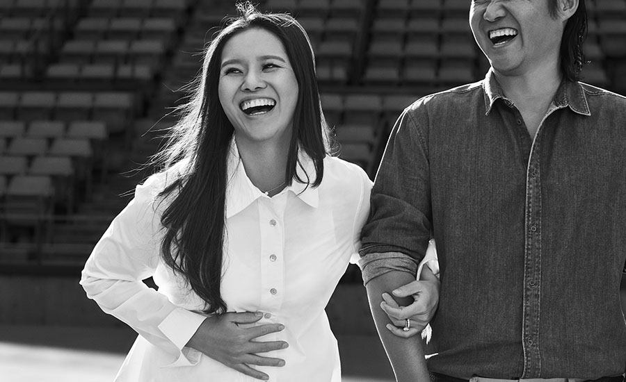
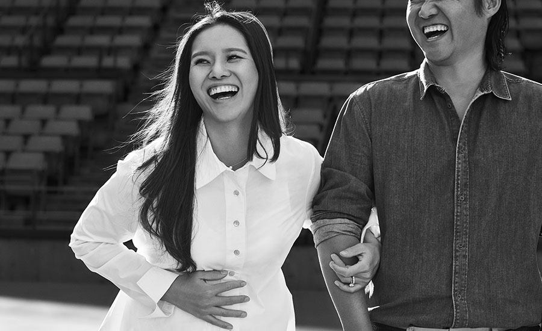
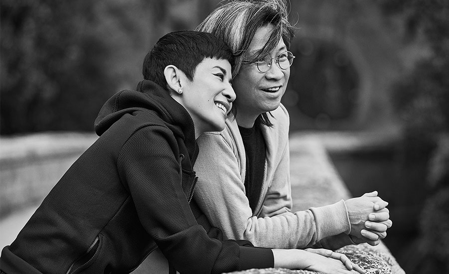
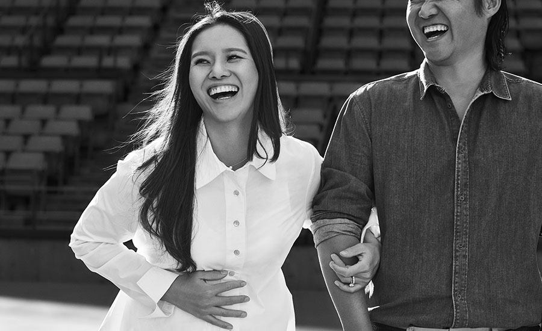
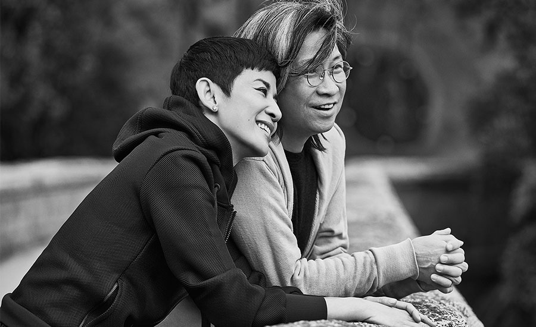
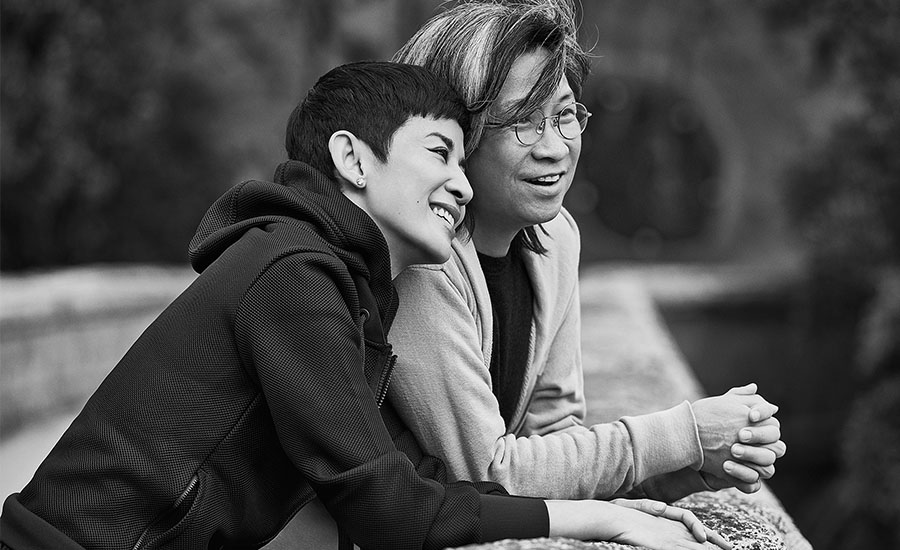
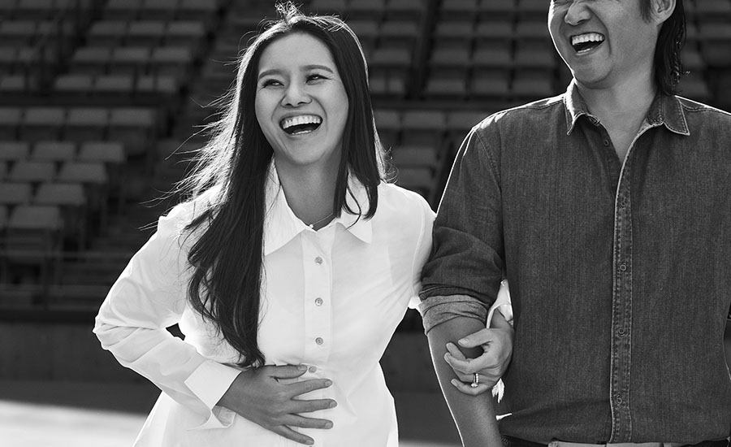
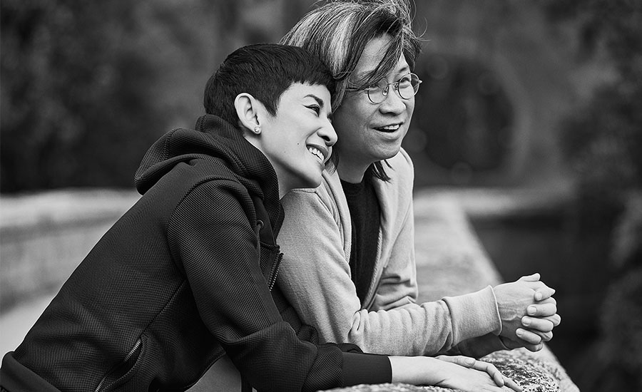

 





Tiffany decided to share the brand’s point of view on the topic of love with the Chinese audiences. To adapt the “Will You” campaign in China, we decided to encourage people to show their love through saying a touching vow.
We filmed two famous couples and recorded their vows to kick off the campaign. Li Na and her husband/coach Jiang Shan, who were welcoming their baby and about to enter a new life chapter after Li Na’s retirement. Director Peter Chan and actress Sandra Ng, who never got registered for marriage, but the two had shared the wonderful life journey together for so many years.
The campaign not only overwhelmed the social media and engaged massive audiences to express their loving vows, but also brought a great surge in Tiffany wedding bands sales that year.

I was the art director on this campaign. Shanshan Quan was my copywriter partner. Vivian Yong was the creative director.
A cool lesson learnt from the production: a pregnant lady’s ring size could change in the morning and at night.